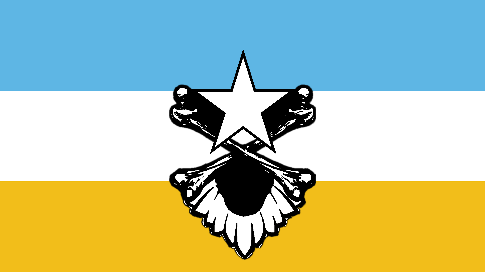
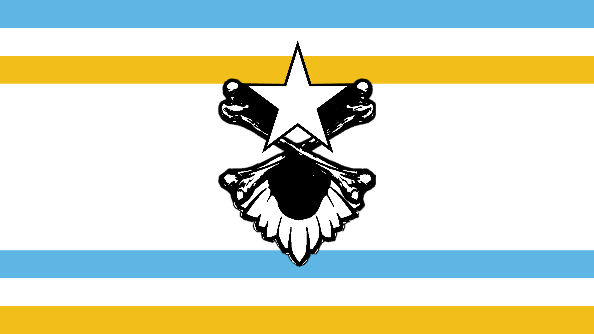
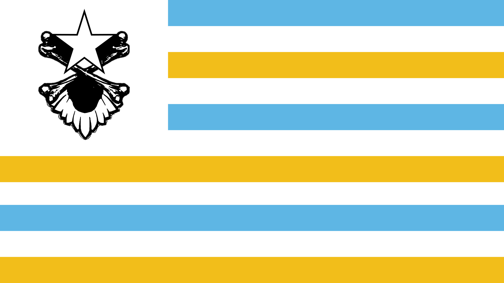

The National Flag

The flag of Gilaïe is a tricolor with a coat of arms in the
middle. The 3 rows from top to bottom are as follows:
·
Baby blue – HEX #5EB6E4; the baby blue color stands for calmness.
In addition, it also means vigilance, perseverance, justice, prosperity, peace and/or
patriotism. In the case of the Principality of Gilaïe, the blue color stands
for the nobility (the people of higher standing).
·
White – HEX #FFFFFF; the white stands for a clean slate. A new
beginning. Equally, white means purity and innocence.
·
Golden yellow – HEX #F2BE1A; this color stands for prosperity
among the people. The yellow color, like the white, stands in front of the
church. The golden yellow exudes value and wisdom.
In the middle of the flag is the coat of arms of the
Principality of Gilaïe. This weapon is crossed bones, with the back of an eagle.
The ends of the bones are illustrated as individuals holding up the 5- pointed
star (pentacle). The horizontal line in the star should be aligned
to the golden-yellow upper line.
In addition to the national flag, the Ministry of Defence
uses a Naval Flag and an Air Flag. These are based at their core on the
national flag but differ:
|
Flag of the Air Force
|
Flag of the
Navy
|
The National Anthem
The national anthem titled ‘Toxic -
Britney Spears (Bardcore | Medieval Style)’ is better known under the name ‘Toxic
Bardcore’ or just ‘The Anthem of Gilaïe.’ The composition was
initially launched by singer Britney Spears in the album In the Zone. The
record label Jive recorded and published the song in 2003. Soon after, it gained
popularity among the common folk and became an all-time classic.
However, Gilaïe did not adopt a pop song as
their national anthem. The composition we now call our national anthem was
based off of Spears’ tune, but it has a whole different style. The “bardcore”
medieval feeling that the music has feels in place as a national anthem and
reflects the beliefs, norms, and values of the Gilaïan people extremely well. It
was produced by Caleb Faith who deserves all the credit for the masterpiece
that we now call our national theme song.
The Gilaïan national anthem does not have lyrics,
as was decided by the council of ministers in the Adoption of the
National Anthem of the Principality of Gilaïe.
You can download the sheet music of the composition
here.